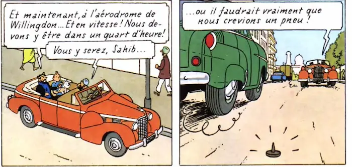
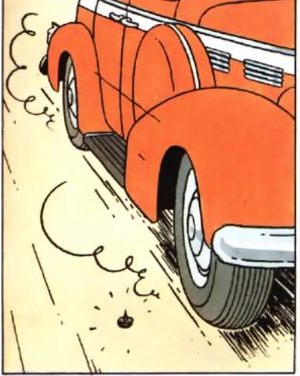
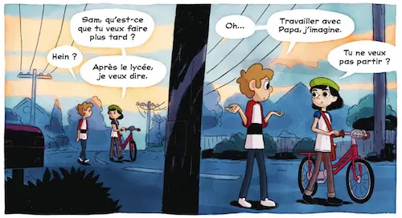

Livres jeunesse
Mes récentes lectures et la découverte d’une petite histoire avec des marmottes, dans la boîte à livres du village, m’ont inspirée et donnée l’envie de créer un livre pour enfants. Je ne sais pas encore si mon idée de bande dessinée peut être adaptée ou si ce doit être quelque chose de totalement différent. Pour l’instant, je poursuis ma découverte des genres destinés à la jeunesse afin d’étoffer le fil de mes idées.
Tintin au Tibet d’Hergé
Résumé
Après avoir rêvé que Tchang l’appelait à l’aide, Tintin décide de se rendre au Tibet, dans l’Himalaya. Sur place, la superstition des sherpas sur la présence d’un monstre dans la montagne ne le dissuade pas de se rendre sur les lieux du crash de l’avion pour rechercher son ami.
Mon avis
J’avais déjà essayé de lire Tintin il y a quelques années, avec le souvenir du dessin animé qui passait à la télé, et de son générique que j’aimais beaucoup. Je m’étais alors aperçue que le propos est très colonialiste, voire raciste. C’est sans doute dû à l’époque d’écriture (1931 pour la première publication en noir et blanc de Tintin au Congo, qui devait être celui que j’avais sous la main à ce moment-là, mais en couleurs), les mentalités n’étaient pas du tout les mêmes qu’aujourd’hui.
Par curiosité, dans le cadre de ma recherche récente sur les livres « jeunesse », j’ai tout de même retenté le coup avec Tintin au Tibet (1963).
Mon premier avis s’est vérifié, et j’ai trouvé le ton global de la BD lourd et désagréable. Pour autant, l’histoire en elle-même est plutôt cool, les dessins sympas – quoique certaines cases sont surchargées, ce qui rend la lecture fastidieuse, voire fatigante – et il y a quelques ficelles scénaristiques intéressantes.
Par exemple :
À la fin d’une page, on voit juste la punaise sur la route et on imagine le pire pour la voiture, surtout en lisant les propos du personnage…

Pourtant, sur la page suivante, la voiture passe juste à côté !
Il y a plein de petits passages comme celui-ci, dans lesquels l’auteur utilise soit la disposition des vignettes sur la page, soit des ellipses, ou encore les pensées des personnages (le Capitaine qui rêve qu’il se fait taper sur la tête) accolées aux conséquences dans la réalité (il s’est cogné dans un arbre). Ces procédés sont excellents.
Pierre Lapin de Beatrix Potter
Résumé
Pierre et ses sœurs ont l’autorisation d’aller s’amuser dans les champs voisins, mais ils ont l’interdiction formelle de s’approcher du jardin de monsieur MacGregor ! Seulement, Pierre a envie de se faire un petit festin avec tous les bons légumes du potager. Il se glisse donc sous la barrière et tombe nez à nez avec le vieil homme qui est en train de jardiner.
Dès qu’il aperçoit le lapin, le vilain MacGregor se donne pour mission de l’attraper. Pierre se retrouve vite acculé, et grâce à l’aide d’autres animaux du jardin, il parvient à s’enfuir et à rentrer au terrier, épuisé et terrifié.
Mon avis
Ce conte de Beatrix Potter est l’une des histoires pour enfants les plus connues. L’association des textes courts, percutants et simples, adressés aux enfants, et des dessins, est un excellent support pour véhiculer une histoire aux petits. J’ai compris, avec ce conte, qu’il n’y a pas forcément de morale complexe ou de scénario alambiqué, dans les histoires pour enfants. Il faut surtout que le lecteur/spectateur, ou l’auditeur/spectateur (si l’histoire lui est contée), se sente proche du personnage, vive son aventure avec lui et souhaite sa résolution.
💖 Le mystère du lac de Jason Pamment
Résumé
Sam et Iris sont meilleurs amis depuis toujours. Ils ont grandi et s’apprêtent à entrer au lycée. Iris rêve d’aventure et Sam souhaite avoir une petite vie tranquille dans son village natal. Cette aspiration commence à les séparer.
Un matin, la rivière au bord de laquelle ils avaient l’habitude de se retrouver, est totalement à sec. Voulant comprendre le mystère, Iris entraîne Sam à la recherche de l’origine de tous les objets abandonnés dans le lit asséché.
Mon avis
Magnifique bande dessinée, aussi narrative avec les mots qu’avec les images. Le dessin est superbe, il invite à la contemplation. L’histoire est touchante et poignante. Les personnages sont rigolos et profonds. Le mystère est intrigant et l’enjeu – l’amitié – colossal.
J’ai adoré ce livre qui, je pense, s’adresse à tout le monde et reflète assez bien les passages de la vie qui ne sont pas des allers simples : on peut toujours regarder en arrière et retrouver son âme d’enfant, sa candeur et son grand cœur.
Le style narratif par les dessins m’a interpelée. Plusieurs vignettes peuvent raconter des tas de choses sans qu’il y ait un seul mot dessus. Et parfois, le mouvement est représenté, sur une même image, avec une ellipse physique pour marquer l’avancée. Ainsi, on peut voir un personnage qui avance en deux exemplaires sur la case, traversée par un poteau ou un tronc d’arbre par exemple. C’est ingénieux et magique à la fois.

La brigade des cauchemars - T.1 Sarah de Franck Thilliez (scénario), Yomgui Dumont (dessin) et Drac (couleur)
Résumé
Tristan et Esteban, amis et frères d’adoption, font secrètement partie de la brigade des cauchemars, menée par le professeur Angus. Ils pénètrent dans les cauchemars des patients afin de déterminer l’origine de leur trouble et de les en débarrasser.
Lorsqu’ils doivent venir en aide à Sarah, qui vient d’être hospitalisée à cause de ses cauchemars, les deux garçons réalisent que le professeur leur cache des informations et que leur mission pourrait bien avoir des conséquences bien plus importantes.
Mon avis
Le style graphique de cette bande dessinée est très intéressant et marquant. J’ai beaucoup aimé m’y plonger. L’histoire est intrigante et bien menée, même si quelques éléments semblent peu approfondis ou même oubliés. C’est peut-être volontaire. Il y a de nombreux tomes et toute une intrigue à démêler. L’ambiance est quand-même assez particulière et l’idée d’envoyer des enfants dans des cauchemars étrangers, qui s’avèrent être physiquement dangereux pour eux, dans le cadre d’une expérimentation scientifique menée par leur père, me met un peu mal à l’aise. Je ne pense pas lire la suite.
L’atelier d’Agathe et Lola - 2. Tous pour Benji ! de Catherine Kalengula
Résumé
Désormais sœurs et amies, Agathe et Lola se lancent dans la réalisation de vidéos de tutos avec leur copain Benji. Leur projet les passionne et les unie, mais le père de Benji n’accepte pas qu’il perde son temps ainsi. Il veut le voir jouer au football.
Mon avis
J’ai beaucoup apprécié ce roman illustré au ton léger, simple et à l’histoire émouvante. Le style adopté et les dessins sont charmants et tout à fait adaptés au public de lecteurs visé. J’imagine parfaitement que certains enfants puissent s’attacher aux personnages et se reconnaître dans les conflits auxquels ils sont confrontés.
Je n’ai pas lu le premier tome, et je n’en ai pas eu besoin pour comprendre l’intrigue et les personnages. Les rebondissements sont suffisamment étoffés, tout en restant accessibles au jeune public. J’avais un peu de mal à me faire une idée de ce que sont capables de saisir les jeunes enfants et je pense que ce roman en montre un bel exemple.
Découvertes agréables qui m’ont révélé un nouvel aspect de la lecture que j’avais jusqu’alors oublié. J’étais habituée aux lectures jeunesses plutôt adressées aux enfants de 12 ans et plus, et aux jeunes adultes, du style Harry Potter ou Les gardiens des cités perdues pour les premiers, ou encore Hunger Games ou Twilight pour les seconds. Finalement, l’approche adoptée pour des enfants plus jeunes est douce et diffuse, sans pour autant être naïve et simplette. C’est quelque chose que je dois garder à l’esprit.